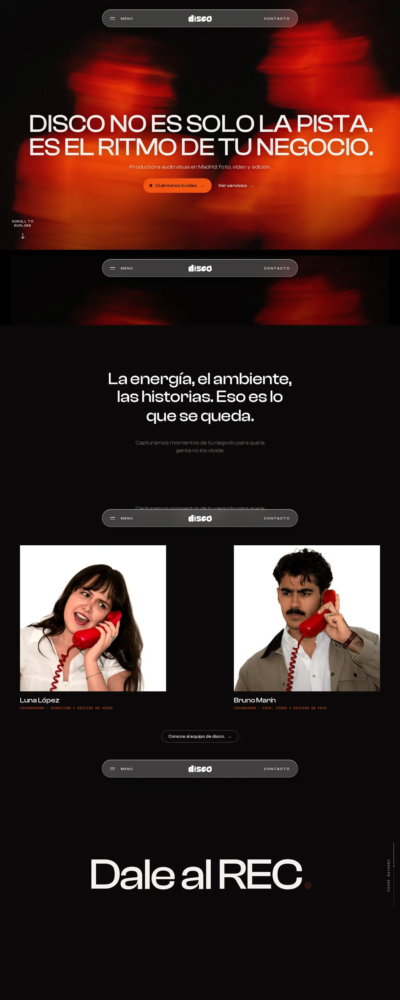

Disco Producción

- Cliente
- Disco, productora audiovisual de foto, vídeo y edición en Madrid.
- Servicios
- Desarrollo web · Animaciones 3D · Posicionamiento
El reto
Una web tan creativa como lo que producen, que transmita ritmo y energía.
Lo que hicimos
- Una intro de carga con el flash de una cámara.
- Un hero con un fluido que reacciona al ratón.
- Un destello 3D que recorre la web.
- Y por debajo, una web rápida y accesible.
Resultado
- 99Rendimiento
- 100Accesibilidad
- 100Prácticas recomendadas
- 100SEO
Agentic Browsing 2/2
Medido con PageSpeed Insights · discoproduccion.com · 16 de noviembre de 2026